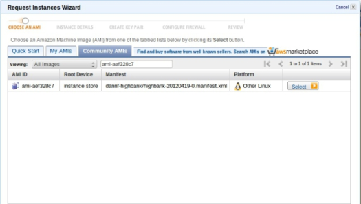

Amazon EC2 提供 ARM 版 Ubuntu Server

Amazon EC2 已經是很多邁向雲端時其中一個最受歡迎的選擇，但一直以來 Amazon EC2 的虛擬機實例 (Instance) 都以 x86 平台為主。但這種狀況卻快將被打破。

▲圖1
最受歡迎的其中一個 Linux 版本 Ubuntu 發行廠 Canonical，在 2012 年 5 月 25 日，宣布向 Amazon EC2 提供 ARM 版本的 Ubuntu Server。Ubuntu 早在 4 年前已經積極支援 ARM 架構，比其他 Linux 廠商都來得早，正式版本的 ARM 版 Ubuntu Server 在 Ubuntu 11.10 開始提供，4 月分亦正式升級至 Ubuntu 12.04 Server LTS (Long Term Support)。目前 ARM 版 Ubuntu Server 的 AMI (Amazon Machine Image) 只是實驗性質，主要對象為開發人員和系統管理員。要使用的話可到 EC2 的控制台啟用新的 Instance，打開 Community AMIs 然後選擇 AMI ID 為 ami-aef328c7 的 Instance，便可使用 ARM 版本的 Ubuntu Server AMI，此 AMI 提供 Ubuntu 12.04 armhf (ARM Hardware Float) 系統環境，使用時因為記憶體用量比較多，必須使用 m1.large 的 Instance。